Visual regression guide
Real regression models, real data, real visuals.
This guide uses R to fit each model and generate the visual. The goal is the same as a strong field guide: show what the model looks like, what problem it solves, what code fits it, and what can go wrong.
How to read it
Visual The plot is generated from a fitted R model, not a stock illustration.
Story The question explains when the model is useful.
Guardrails Diagnostics and parameters show what to check before trusting the result.
Visual models 18 Core regression families with generated R plots.
Real datasets 10+ R built-ins and recommended package datasets.
Primary language R Every visual is reproducible from the builder script.
Full catalog 50 Additional regression families remain in the CSV catalog.
Visual Field Guide
The cards below cover the primary regression families analysts reach for first. The full 50-row catalog is still available for specialized models that require extra packages or project-specific data.
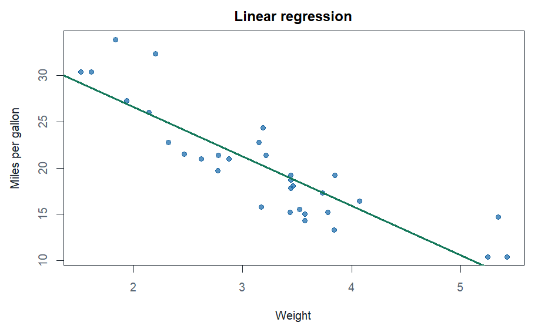
1 Simple linear regressionModels: one numeric predictor and one continuous target.
Real data: mtcars.
R model: lm(mpg ~ wt, data = mtcars)
Check: linearity, residual spread, leverage, outliers.
Key knobs: slope, intercept, residual error, R-squared.
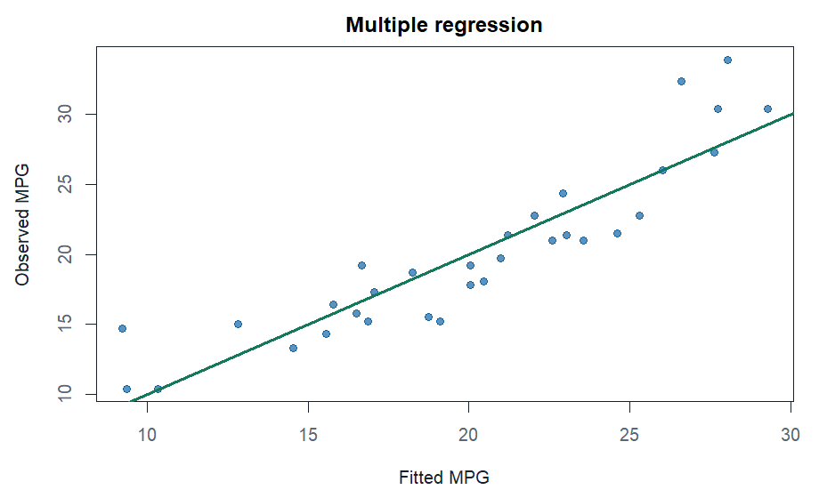
2 Multiple linear regressionModels: several predictors explaining a continuous target.
Real data: mtcars.
R model: lm(mpg ~ wt + hp + disp, data = mtcars)
Check: VIF, condition number, heteroskedasticity, influence.
Key knobs: coefficients, adjusted R-squared, RMSE.
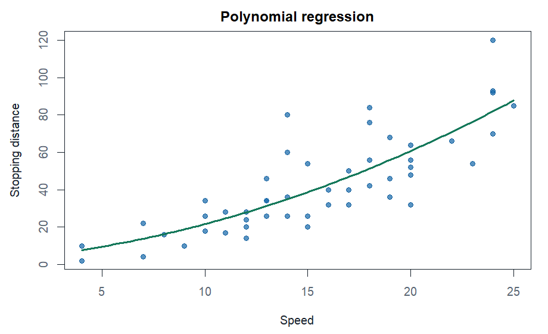
3 Polynomial regressionModels: curved relationships using powers of a predictor.
Real data: cars.
R model: lm(dist ~ speed + I(speed^2), data = cars)
Check: residual curvature, extrapolation, overfit.
Key knobs: degree, centered predictors.
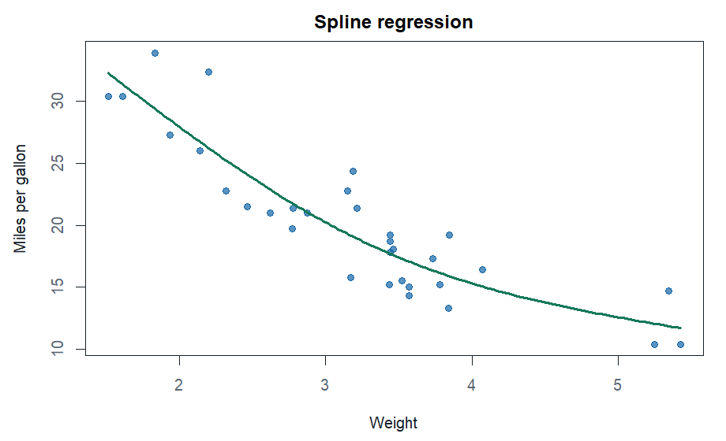
4 Spline regressionModels: flexible bends without forcing a simple polynomial.
Real data: mtcars.
R model: lm(mpg ~ splines::ns(wt, df = 3), data = mtcars)
Check: boundary behavior, degrees of freedom, residual pattern.
Key knobs: knots, basis dimension, smoothness.
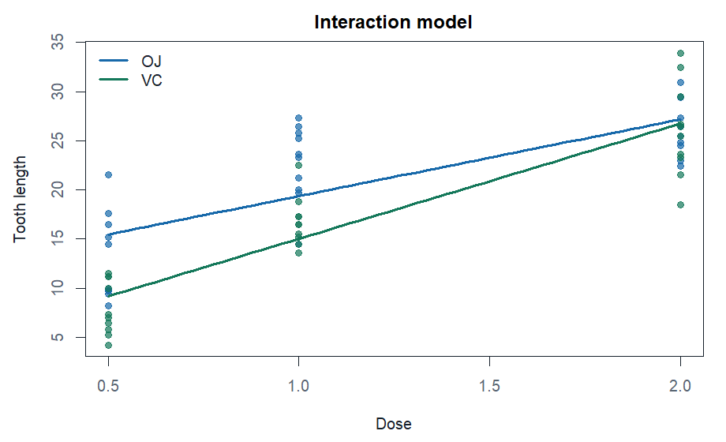
5 Interaction regressionModels: whether one effect changes by group.
Real data: ToothGrowth.
R model: lm(len ~ supp * dose, data = ToothGrowth)
Check: cell counts, centering, hierarchy, simple slopes.
Key knobs: main effects and interaction coefficient.
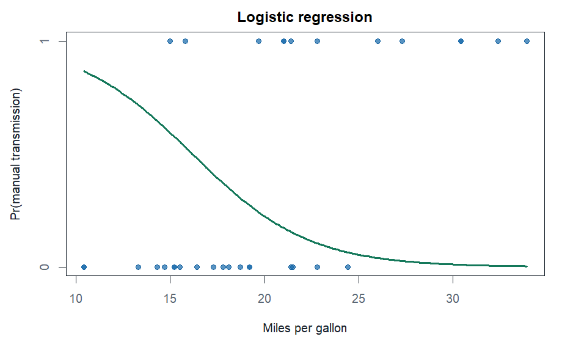
6 Logistic regressionModels: a yes/no outcome as a probability.
Real data: mtcars.
R model: glm(am ~ mpg + wt, data = mtcars, family = binomial())
Check: class balance, separation, calibration, threshold.
Key knobs: odds ratio, logit link, predicted probability.
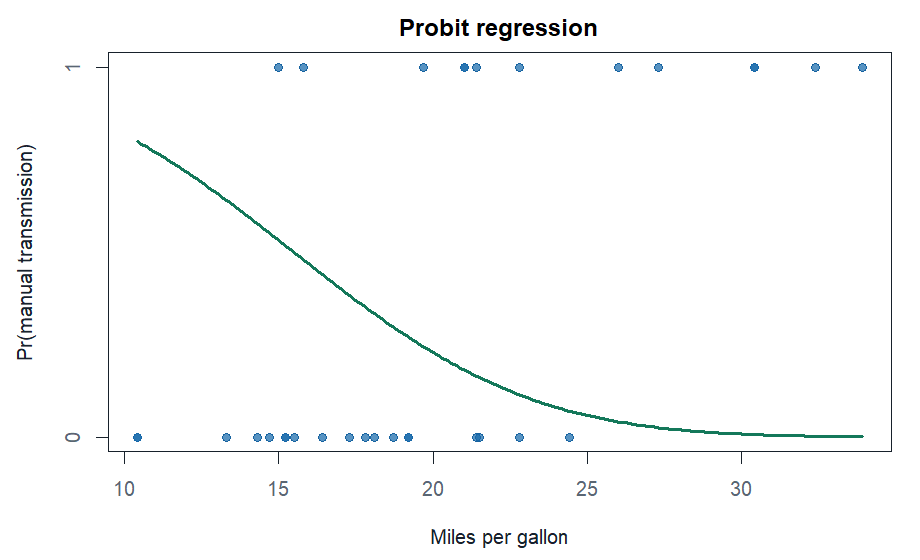
7 Probit regressionModels: a binary outcome through a latent normal threshold.
Real data: mtcars.
R model: glm(am ~ mpg + wt, data = mtcars, family = binomial(link = "probit"))
Check: separation, calibration, marginal effects.
Key knobs: normal link and z-score scale.
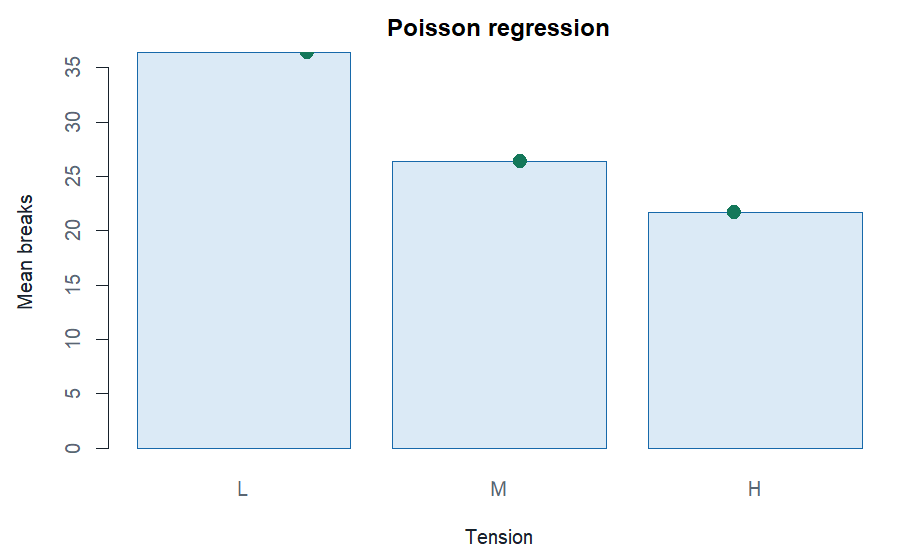
8 Poisson regressionModels: counts over a fixed unit or exposure.
Real data: warpbreaks.
R model: glm(breaks ~ wool + tension, data = warpbreaks, family = poisson())
Check: overdispersion, exposure, zero inflation, independence.
Key knobs: rate, log link, mean-variance assumption.
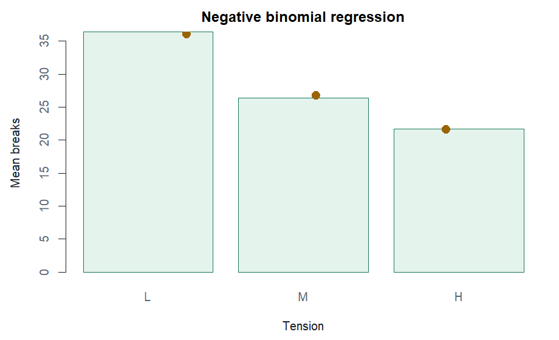
9 Negative binomial regressionModels: overdispersed counts.
Real data: warpbreaks.
R model: MASS::glm.nb(breaks ~ wool + tension, data = warpbreaks)
Check: residual deviance, zero rate, dispersion.
Key knobs: mean, theta, log link.
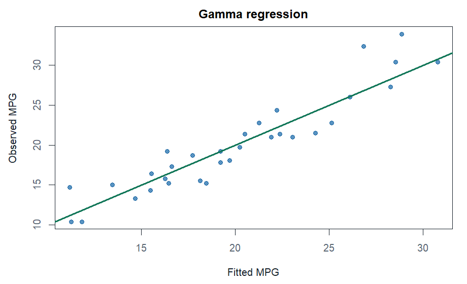
10 Gamma regressionModels: positive continuous targets with skew.
Real data: mtcars.
R model: glm(mpg ~ wt + hp, data = mtcars, family = Gamma(link = "log"))
Check: positive target, residual shape, link fit.
Key knobs: mean model, scale, log link.
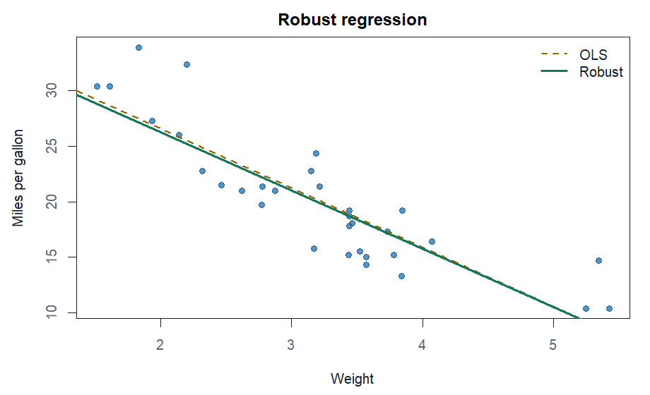
11 Robust regressionModels: a continuous target while reducing outlier influence.
Real data: mtcars.
R model: MASS::rlm(mpg ~ wt, data = mtcars)
Check: outliers, leverage, sensitivity.
Key knobs: robust loss and case weights.
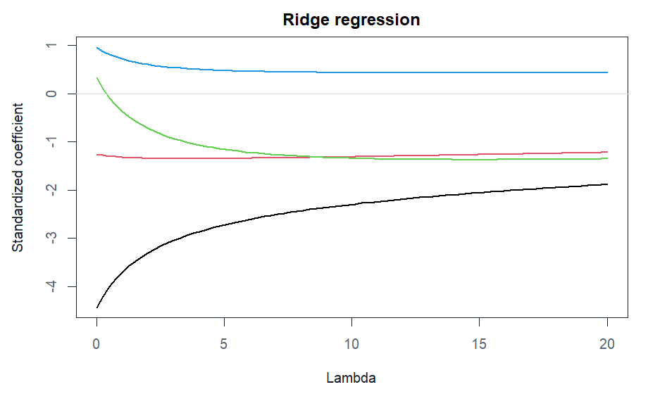
12 Ridge regressionModels: correlated predictors with shrinkage.
Real data: mtcars.
R model: MASS::lm.ridge(mpg ~ wt + hp + disp + qsec, data = mtcars)
Check: scaling, collinearity, validation error.
Key knobs: lambda shrinkage penalty.
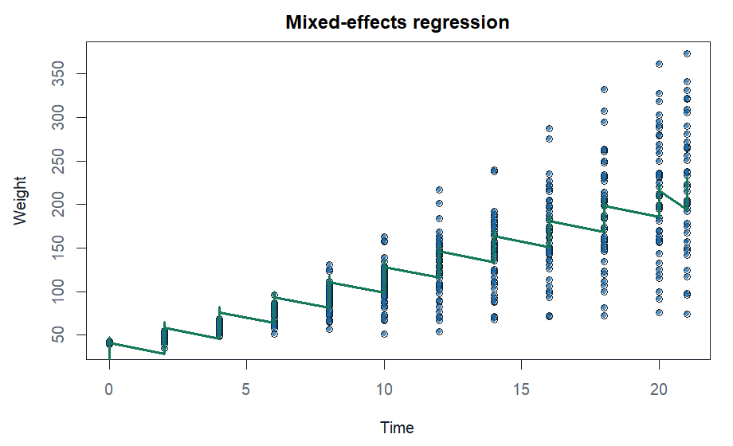
13 Mixed-effects regressionModels: repeated rows inside subjects or groups.
Real data: ChickWeight.
R model: nlme::lme(weight ~ Time + Diet, random = ~ 1 | Chick, data = ChickWeight)
Check: cluster sizes, random-effect variance, residual dependence.
Key knobs: fixed effects, random intercepts, group variance.
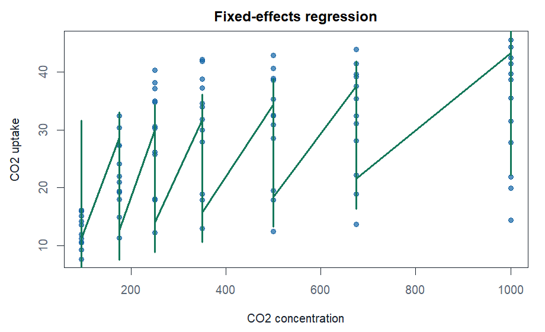
14 Fixed-effects regressionModels: repeated entities with their own baseline level.
Real data: CO2.
R model: lm(uptake ~ conc + factor(Plant), data = CO2)
Check: within-entity variation, omitted time effects, serial dependence.
Key knobs: entity indicators and within effect.
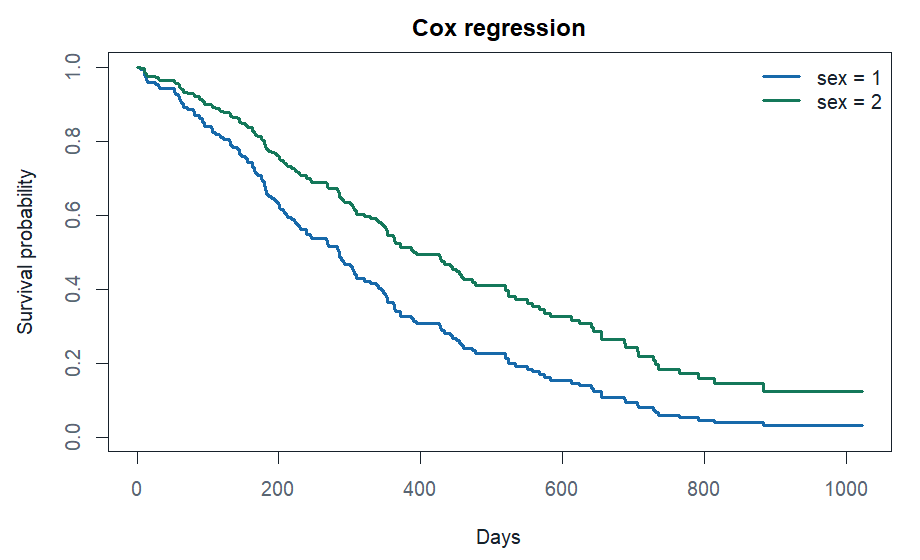
15 Cox proportional hazardsModels: time until event with censoring.
Real data: survival::lung.
R model: survival::coxph(Surv(time, status) ~ sex + age, data = survival::lung)
Check: censoring, proportional hazards, influential subjects.
Key knobs: hazard ratio and baseline hazard.
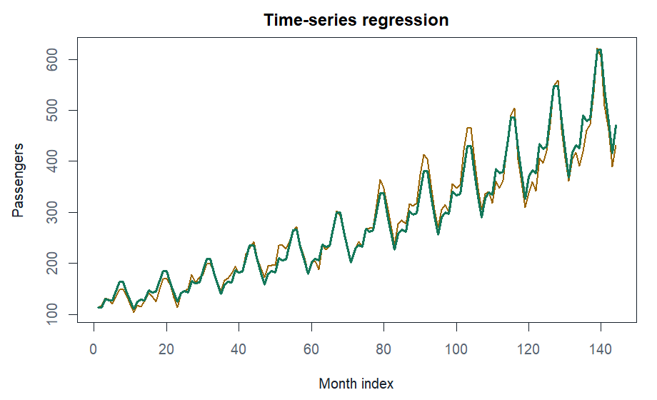
16 Time-series regressionModels: trend and seasonality in a time-indexed target.
Real data: AirPassengers.
R model: lm(log(AirPassengers) ~ time + month)
Check: autocorrelation, seasonality, time split, stationarity.
Key knobs: trend, seasonal effects, transformed target.
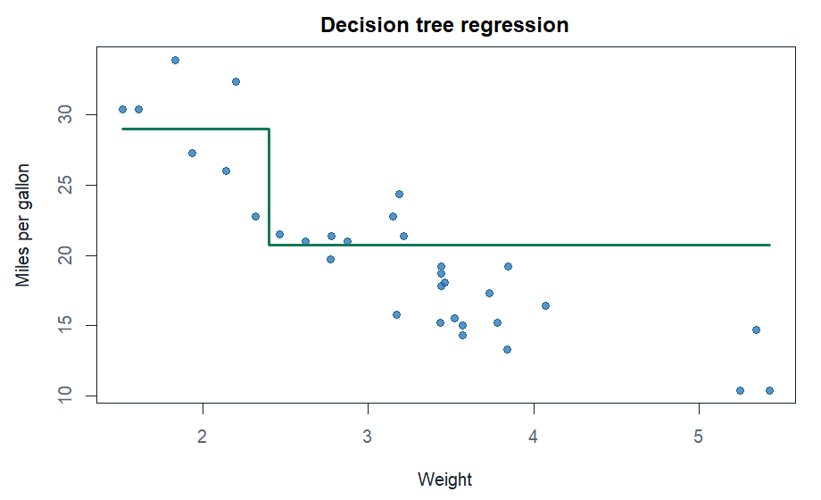
17 Decision tree regressionModels: nonlinear prediction through simple rules.
Real data: mtcars.
R model: rpart::rpart(mpg ~ wt + hp + disp, data = mtcars, method = "anova")
Check: depth, leaf size, pruning, overfit gap.
Key knobs: splits, complexity parameter, terminal-node mean.
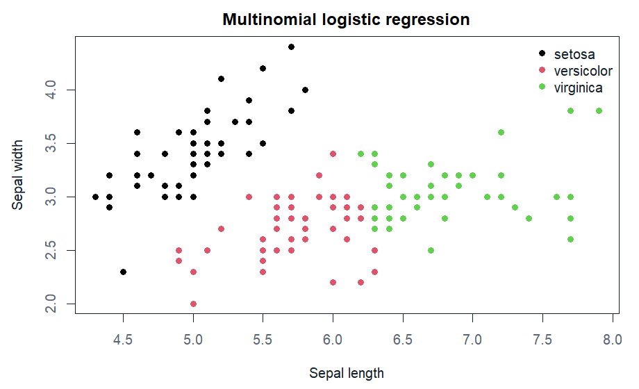
18 Multinomial logistic regressionModels: more than two unordered classes.
Real data: iris.
R model: nnet::multinom(Species ~ Sepal.Length + Sepal.Width, data = iris)
Check: class balance, separation, confusion matrix.
Key knobs: class logits, reference class, predicted probabilities.
Rebuild Every Visual
Run the builder script from the repository root. It fits the R models, saves the PNGs, and writes the guide CSV.
Rscript statistical-analytics/scripts/build_visual_regression_guide.R
Specialized Models
Models like Tobit, beta, zero-inflated, Bayesian, and spatial regression remain in the full catalog because they need extra packages or project-specific data to visualize honestly.
Open full regression catalog